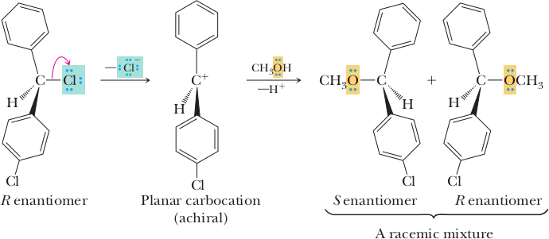
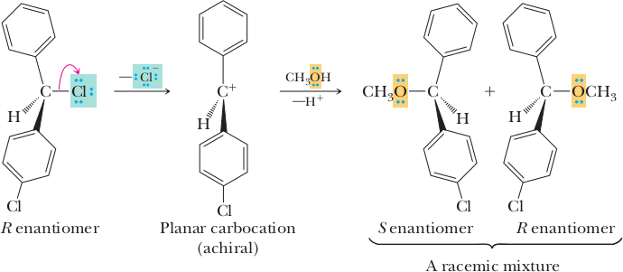
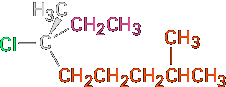
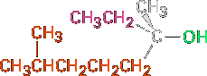
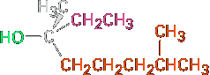
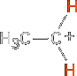
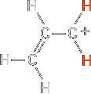
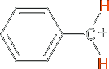
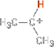
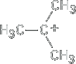

The SN1 reaction
Most nucleophilic substitutions take place by the SN2 pathway just discussed. The reaction is favored when carried out with an unhindered substrate and a negatively charged nucleophile in a polar aprotic solvent, but is disfavored when carried out with a hindered substrate and a neutral nucleophile in a protic solvent. You might therefore expect the reaction of a tertiary substrate (hindered) with water (neutral, protic) to be among the slowest of substitution reactions. Remarkably, however, the opposite is true. The reaction of the tertiary halide (CH3)3CBr with H2O to give the alcohol 2-methyl-2-propanol is more than 1 million times as fast as the corresponding reaction of CH3Br to give methanol.
| R−Br | + | H2O | ⟶ | R−OH | + | HBr |
 Methyl |  Primary |  Secondary |  Tertiary | |||
| Relative reactivity | <1 | 1 | 12 | 1200000 | ||
|---|---|---|---|---|---|---|
| Reactivity ⟶ | ||||||
What’s going on here? Clearly, a nucleophilic substitution reaction is occurring—a halogen is replacing a hydroxyl group—yet the reactivity order seems backward. These reactions can’t be taking place by the SN2 mechanism we’ve been discussing, and we must therefore conclude that they are occurring by an alternative substitution mechanism. This alternative mechanism is called the SN1 reaction, for substitution, nucleophilic, unimolecular.
In contrast to the SN2 reaction of CH3Br with OH−, the SN1 reaction of (CH3)3CBr with H2O has a rate that depends only on the alkyl halide concentration and is independent of the H2O concentration. In other words, the reaction is a first-order process; the concentration of the nucleophile does not appear in the rate equation.
Reaction rate = Rate of disappearance of alkyl halide = k x [RX]
To explain this result, we need to know more about kinetics measurements. Many organic reactions occur in several steps, one of which usually has a higher-energy transition state than the others and is therefore slower. We call this step with the highest transition-state energy the rate-limiting step, or rate-determining step. No reaction can proceed faster than its rate-limiting step, which acts as a kind of traffic jam, or bottleneck. In the SN1 reaction of (CH3)3CBr with H2O, the fact that the nucleophile concentration does not appear in the first-order rate equation means that it is not involved in the ratelimiting step and must therefore be involved in some other, non–rate-limiting step. The mechanism shown in Figure 1 accounts for these observations.

Unlike what happens in an SN2 reaction, where the leaving group is displaced at the same time the incoming nucleophile approaches, an SN1 reaction takes place by loss of the leaving group before the nucleophile approaches. 2-Bromo-2-methylpropane spontaneously dissociates to the tert-butyl carbo cation plus Br− in a slow rate-limiting step, and the intermediate carbocation is then immediately trapped by the nucleophile water in a faster second step. Water is not a reactant in the step whose rate is measured. The energy diagram is shown in Figure 2.
Because an SN1 reaction occurs through a carbocation intermediate, its stereo chemical outcome is different from that of an SN2 reaction. Carbocations, as we’ve seen, are planar, sp2-hybridized, and achiral. Thus, if we carry out an SN1 reaction on one enantiomer of a chiral reactant and go through an achiral carbocation intermediate, the product must lose its optically activity (Section 8.12). That is, the symmetrical intermediate carbocation can react with a nucleophile equally well from either side, leading to a racemic, 50;50 mixture of enantiomers (Figure 3).
 

The conclusion that SN1 reactions on enantiomerically pure substrates should give racemic products is nearly, but not exactly, what is found. In fact, few SN1 displacements occur with complete racemization. Most give a minor (0–20%) excess of inversion. The reaction of (R)-6-chloro-2,6-dimethyloctane with H2O, for example, leads to an alcohol product that is approximately 80% racemized and 20% inverted (80% R,S 1 20% S is equivalent to 40% R 1 60% S).
|  (R)-6-Chloro-2,6-dimethyloctane | H2O ⟶ Ethanol |  60% (inversion) (S)-3,7-Dimethyl-3-octanol.png | + |  40% (retention) (R)-3,7-Dimethyl-3-octanol.png |
This lack of complete racemization in SN1 reactions is due to the fact that ion pairs are involved. According to this explanation, first proposed by Saul Winstein at UCLA, dissociation of the substrate occurs to give a structure in which the two ions are still loosely associated and in which the carbocation is effectively shielded from reaction on one side by the departing anion. If a certain amount of substitution occurs before the two ions fully diffuse apart, then a net inversion of configuration will be observed (Figure 11.11).
Characteristics of the SN1 Reaction
Just as the SN2 reaction is strongly influenced by the structure of the substrate, the leaving group, the nucleophile, and the solvent, the SN1 reaction is similarly influenced. Factors that lower ΔG‡, either by lowering the energy level of the transition state or by raising the energy level of the ground state, favor faster SN1 reactions. Conversely, factors that raise ΔG‡, either by raising the energy level of the transition state or by lowering the energy level of the reactant, slow down the SN1 reaction.
The Substrate
According to the Hammond postulate (Section 7.10), any factor that stabilizes a high-energy intermediate also stabilizes the transition state leading to that intermediate. Since the rate-limiting step in an SN1 reaction is the spontaneous, unimolecular dissociation of the substrate to yield a carbocation, the reaction is favored whenever a stabilized carbocation intermediate is formed. The more stable the carbocation intermediate, the faster the SN1 reaction.
We saw in Section 7.9 that the stability order of alkyl carbocations is 3° > 2° > 1° > −CH3. To this list we must also add the resonance-stabilized allyl and benzyl cations. Just as allylic radicals are unusually stable because the unpaired electron can be delocalized over an extended p orbital system (Section 10.4), so allylic and benzylic carbocations are unusually stable. (The word benzylic means “next to an aromatic ring.”) As Figure 11.12 indicates, an allylic cation has two resonance forms. In one form the double bond is on the “left”; in the other form it’s on the “right.” A benzylic cation has five resonance forms, all of which contribute to the overall resonance hybrid.
Because of resonance stabilization, a primary allylic or benzylic carbocation is about as stable as a secondary alkyl carbocation and a secondary allylic or benzylic carbocation is about as stable as a tertiary alkyl carbocation. This stability order of carbocations is the same as the order of SN1 reactivity for alkyl halides and tosylates.
 |  |  |  |  |  | |||||
| Methyl | < | Primary | < | Allylic | ≈ | Benzylic | ≈ | Isopropyl carbocation Secondary | < | Tertiary-butyl carbocation Tertiary |
We should also note parenthetically that primary allylic and benzylic sub- strates are particularly reactive in SN2 reactions as well as in SN1 reactions. Allylic and benzylic C − X bonds are about 50 kJ/mol (12 kcal/mol) weaker than the corresponding saturated bonds and are therefore more easily broken.
| CH3Ch2−Cl | H2C=CHCH2−Cl | Ph−CH2−Cl |
| 338 kJ/mol (81 kcal/mol) | 289 kJ/mol (69 kcal/mol) | 293 kJ/mol (70 kcal/mol) |
The Leaving Group
We said during the discussion of SN2 reactivity that the best leaving groups are those that are most stable; that is, those that are the conjugate bases of strong acids. An identical reactivity order is found for the SN1 reaction because the leaving group is directly involved in the rate-limiting step. Thus, the SN1 reactivity order is
| HO− | < | Cl− | < | Br− | < | I− | ≈ | TosO− | H2O | |
| ⟶ Leaving group reactivity | ||||||||||
Note that in the SN1 reaction, which is often carried out under acidic conditions, neutral water is sometimes the leaving group. This occurs, for example, when an alkyl halide is prepared from a tertiary alcohol by reaction with HBr or HCl (Section 10.5). As shown in the mechanism, the alcohol is first protonated and then spontaneously loses H2O to generate a carbocation, which reacts with halide ion to give the alkyl halide. Knowing that an SN1 reaction is involved in the conversion of alcohols to alkyl halides explains why the reaction works well only for tertiary alcohols. Tertiary alcohols react fastest because they give the most stable carbocation intermediates.
The Nucleophile
The nature of the nucleophile plays a major role in the SN2 reaction but does not affect an SN1 reaction. Because the SN1 reaction occurs through a rate-limiting step in which the added nucleophile has no part, the nucleophile can’t affect the reaction rate. The reaction of 2-methyl-2-propanol with HX, for instance, occurs at the same rate regardless of whether X is Cl, Br, or I. Furthermore, neutral nucleophiles are just as effective as negatively charged ones, so SN1 reactions frequently occur under neutral or acidic conditions.
 2-Methyl-2-propanol | + | HX | ⟶ | CH3−C−(CH3)2X | + | H2O |
The Solvent
What about the solvent? Do solvents have the same effect in SN1 reactions that they have in SN2 reactions? The answer is both yes and no. Yes, solvents have a large effect on SN1 reactions, but no, the reasons for the effects on SN1 and SN2 reactions are not the same. Solvent effects in the SN2 reaction are due largely to stabilization or destabilization of the nucleophile reactant, while solvent effects in the SN1 reaction are due largely to stabilization or destabilization of the transition state.
The Hammond postulate says that any factor stabilizing the intermediate carbocation should increase the rate of an SN1 reaction. Solvation of the carbocation—the interaction of the ion with solvent molecules—has just such an effect. Solvent molecules orient around the carbocation so that the electron-rich ends of the solvent dipoles face the positive charge (Figure 11.14), thereby lowering the energy of the ion and favoring its formation.

The properties of a solvent that contribute to its ability to stabilize ions by solvation are related to the solvent’s polarity. SN1 reactions take place much more rapidly in strongly polar solvents, such as water and methanol, than in less polar solvents, such as ether and chloroform. In the reaction of 2-chloro-2-methylpropane, for example, a rate increase of 100,000 is observed on going from ethanol (less polar) to water (more polar). The rate increases on going from a hydrocarbon solvent to water are so large they can’t be measured accurately.
 | + | ROH | ⟶ | (CH3)3−C−OR | + | HCl | |
| Relative reactivity | Ethanol 1 | 40% Water/60% Ethanol80% 100 | Water/20% EthanolWater 14,000 | Water 100,000 |
It should be emphasized again that both the SN1 and the SN2 reaction show solvent effects, but that they do so for different reasons. SN2 reactions are disfavored in protic solvents because the ground-state energy of the nucleophile is lowered by solvation. SN1 reactions are favored in protic solvents because the transition-state energy leading to carbocation intermediate is lowered by solvation.
A Summary of SN1 Reaction Characteristics
The effects on SN1 reactions of the four variables—substrate, leaving group, nucleophile, and solvent—are summarized in the following statements:
Substrate: The best substrates yield the most stable carbocations. As a result, SN1 reactions are best for tertiary, allylic, and benzylic halides.
Leaving group Good leaving groups increase the reaction rate by lowering the energy level of the transition state for carbocation formation.
Nucleophile The nucleophile must be nonbasic to prevent a competitive elimination of HX (Section 11.7), but otherwise does not affect the reaction rate. Neutral nucleophiles work well.
Solvent: Polar solvents stabilize the carbocation intermediate by solvation, thereby increasing the reaction rate.